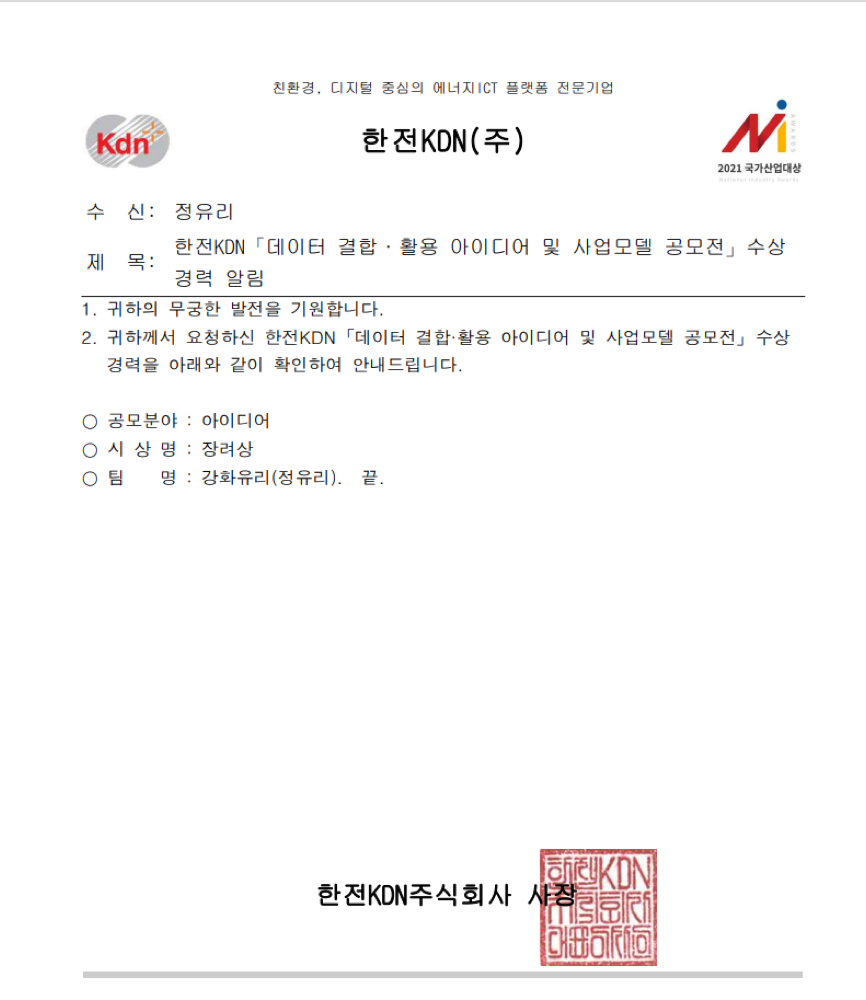
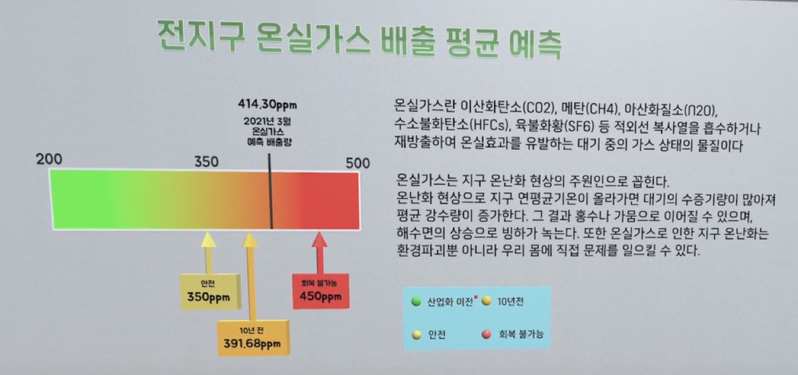
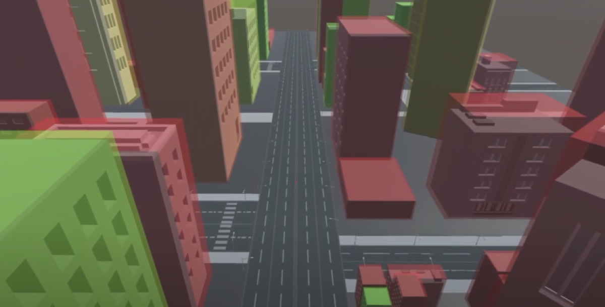

한전KDN 주관 「데이터 결합·활용 아이디어 및 사업모델 공모전」에서 아이디어 분야 장려상을 수상했습니다. 팀명은 ‘강화유리’입니다.
기술 구현보다 데이터를 쓰는 방식으로 평가받은 결과라, 팀장으로서 정한 기획 방향이 실제로 설득력이 있었는지를 확인할 수 있는 계기였습니다.

전시관에 갈 수 없는 사람도 에너지 데이터를 직접 둘러볼 수 있게 만든 가상 전시관. 4인 팀의 팀장으로 기획과 팀 리딩을 맡았고, 한전KDN 공모전에서 장려상을 받았습니다.
“에너지 데이터는 공개돼 있는데, 왜 아무도 보지 않는가.” 공공 API로 열려 있는 에너지 데이터는 표와 수치로만 존재했고, 전시관은 거리와 코로나 때문에 갈 수 없었습니다. 이 프로젝트는 그 데이터를 걸어 들어가 볼 수 있는 공간으로 바꾸는 시도였습니다.
코로나19나 거리상의 제약으로 전시관 방문이 어려운 이들을 위해, 에너지 데이터를 메타버스 공간에서 체험할 수 있도록 기획한 가상 전시관 체험 프로그램입니다. 국토교통부, 에너지경제연구원, 한국전력거래소의 공개 데이터를 결합해 전시물로 구성했습니다.
4인 팀 프로젝트에서 팀장을 맡아 기획과 팀 리딩을 담당했습니다.
공모전은 아이디어 분야로 출품했기 때문에, 구현물 자체보다 “왜 이 데이터를 공간으로 보여줘야 하는가”를 설명하는 일이 팀장의 몫이었습니다. 전시 동선과 각 존에서 관람자가 무엇을 알게 되는지를 먼저 정하고, 그다음에 만들 화면을 나눴습니다.
웹 페이지로 데이터를 보여주는 방식과 가장 크게 갈리는 지점이 시점입니다. 현실감을 높이기 위해 1인칭 사용자 시점으로 전시관에 입장하고, 사용자의 시선 이동에 따라 화면이 전환되도록 만들었습니다.
화면을 넘기는 것이 아니라 걸어서 이동하기 때문에, 관람자는 자기가 고른 순서대로 전시물을 봅니다. 그래서 전시물마다 앞뒤 설명에 의존하지 않고 그 자리에서 독립적으로 읽히도록 구성했습니다.
사용자의 클릭을 통해 원하는 전시물의 데이터를 확인할 수 있습니다. 모든 정보를 벽에 붙여 두면 읽지 않고 지나치기 때문에, 궁금한 전시물을 직접 눌렀을 때 자세한 값이 열리는 방식으로 나눴습니다.


체험 기능의 핵심은 축척 전환입니다.
모형을 위에서 내려다보던 관람자가 x키를 누르면 그 모형 안으로 들어가,
같은 도시를 건물 사이에서 다시 봅니다. 도시 단위 통계와 개인의 체감을 같은 공간에서 연결하려는 장치였습니다.
진입 조건은 추측하지 않도록 안내판을 모형 바로 앞에 세워 뒀습니다.
존마다 PART 번호를 스크린 상단에 붙였습니다. 자유롭게 돌아다니는 구조라 순서가 보장되지 않기 때문에, 지금 몇 번째 존인지를 공간 안에 표시해 관람자가 자기 진행 상황을 짚을 수 있게 했습니다.
한전KDN 주관 「데이터 결합·활용 아이디어 및 사업모델 공모전」에서 아이디어 분야 장려상을 수상했습니다. 팀명은 ‘강화유리’입니다.
기술 구현보다 데이터를 쓰는 방식으로 평가받은 결과라, 팀장으로서 정한 기획 방향이 실제로 설득력이 있었는지를 확인할 수 있는 계기였습니다.

1인칭으로 걸어 다니는 3D 공간이 전제였기 때문에 웹 기술이 아니라 Unity를 선택했습니다. 공간 이동과 충돌, 시선 기반 화면 전환을 직접 만들지 않고 엔진에 맡길 수 있어 4명이 6주 안에 전시관 전체를 채우는 데 필요한 선택이었습니다.
이 프로젝트에서 가장 오래 붙잡은 질문은 “어떻게 만들까”가 아니라 “이 데이터를 왜 공간으로 봐야 하는가”였습니다. 표로 충분한 데이터를 3D로 옮기면 오히려 읽기 어려워지기 때문에, 가전제품 옆의 소비 전력이나 축척을 바꾸는 체험처럼 공간이어야 의미가 생기는 것만 남겼습니다.
팀장으로 처음 진행한 프로젝트이기도 했습니다. 각자 맡은 파트에서 판단을 내려야 하는 구조였고, 그 판단들을 하나의 동선으로 묶는 일이 제 역할이었습니다.